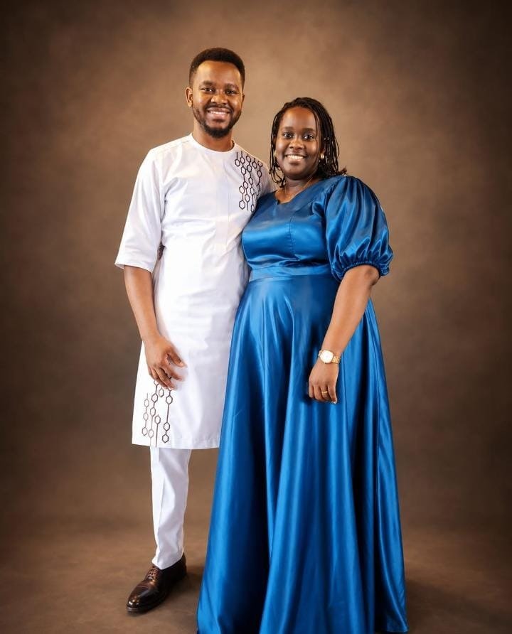

Our Story
A vision born of God in 2019 — a people called to live everyday in the presence of God and carry His glory to the ends of the earth.
How It Began
This is a vision born of God in 2019. It came after a powerful encounter with the Presence of God while in Fedha — Pastor Ezekiel saw God's presence invading the earth and Him being glorified everywhere through His select and sent men.
The vision began to find maturity in 2022 and finally began to manifest in 2024. The name Uwepo Church was received on 28th March 2024, consistent with the first location of the ministry.
The original identity is Parousia Global — a sent people who move with the presence of God and His manifestations all over the whole earth, in every sphere of human interaction. The defining theme: A People of the Presence.
Parousia Global (Uwepo Church as the first expression) is not a denomination, but rather a movement — a family of believers who have a desire to see Jesus seen, known and glorified everywhere on earth through them.
Vision received
Church launched
With a mandate to the ends of the World
Through God's love, wisdom and power; to influence men to submit to the Lordship of Christ Jesus — until every knee bows and every tongue confesses that Jesus Christ is Lord.
Psalm 72:11
To see Jesus Glorified, lives changed, destinies actualized and God's will effected — through a people of His presence who carry Him into every sphere of human interaction on the earth.
John 12:32
Leadership

Pastor Ezekiel Musyoka
Senior Pastor & Founder · with Faith Musyoka
Senior Pastor & Founder
"I saw God's presence invading the earth and Him being glorified everywhere through His select and sent men."
Pastor Ezekiel Musyoka received the vision for Uwepo Church in 2019 after a powerful encounter with the Presence of God while in Fedha. The vision matured through 2022 and began to manifest in 2024.
Together with Faith Musyoka, Pastor Ezekiel leads this Apostolic ministry with a global mandate — marked by a deep hunger for God, powerful preaching, fervent prayer, and a genuine love for people from all walks of life.
Whether you are searching for purpose, healing, community, or simply a place to belong — you have found your home.
Our Foundations
The foundational, deeply held principles that guide our culture, our daily decisions, and every ministry action.
We believe in God's unconditional love. We build a family of mutual love through evangelism, charity, teaching, and fellowship where all feel included.
Jn 3:16 · Mat 22:37-39 · 1 Jn 4:19
Founded on the pure Word of God — alive and working now. We offer pure, balanced and uncorrupted doctrine that transforms and matures every believer.
Matthew 28:19-20
We develop a prayer culture and believe in all kinds of prayer. Revival-conscious — stirring up men in prayer until there is a release of the Spirit.
Jer 33:3 · Luke 18:1
We live for God and manifest His superiority over all things. We are a supernatural Kingdom people — miracles and His power are part of our everyday lives.
1 Cor 4:20